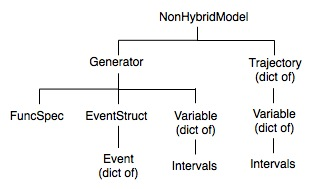
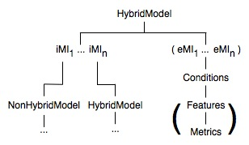

On this page we describe the use of the Model class, in particular its sub-class NonHybridModel. A summary of the Model aggregation hierarchy (containment of other classes) is shown in the following figures:
|  |  |
iMI (eMI) means internal (external, respectively) Model Interface, while the subscripts indicate that there can be one or more of each. Parentheses indicate optional attributes. For instance, the Feature and Metric classes are used optionally in external MIs, which are used optionally for global consistency control during hybrid trajectory calculations. These are discussed further on the ModelInterface and HybridSystems pages. Generators also contain an object of class Diagnostics, not shown in this diagram.
A non-hybrid model is a dressed-up version of a Generator. The primary difference is that it can store its trajectories for easy access. Models can also use convenient hierarchical naming conventions not available for Generators. This is particularly relevant to building models using the structured ModelSpec classes, where a tree hierarchy is navigated using the dot '.' naming convention familiar to object orientation in Python. (See the /tests/CIN.py script for an example.) The NonHybridModel class is provided for API-compatibility with the HybridModel class so that they are inter-changeable in large models.
For hybrid models, there are three essential elements in PyDSTool: Generators (wrapped via NonHybridModels), events, and transition rules between the Generators that are applied on occurrence of the events. The specification of an initial state condition must uniquely determine which Generator should be used to begin determining a trajectory. This is done by evaluation of the associated events for the system at the initial condition. A terminal event may occur that stops the trajectory generation.
To take advantage of the introspection and book-keeping utilities built into the Model class, you may wish to convert a single Generator corresponding to a non-hybrid system into a Model object. For convenience, the function embed is provided to wrap an individual Generator into a NonHybridModel object. Simply call the embed(<generator>, [<model_name>]) function, which returns a NonHybridModel containing the single Generator. If the model name is not specified, the Generator's name plus the suffix '_model' is applied. To build a hybrid model, see HybridSystems.
The ModelConstructor class is what is used to build Model objects from ModelSpec functional specifications.
If built in this way, a Model will have a non-empty attribute 'mspecdict' that contains the complete, flattened specification dictionary of the ModelSpec used to define it.
More information later. These classes are still experimental.
Trajectories are stored inside the Model object they are associated with. Trajectories can be accessed much the same way as regular trajectory objects when treated as continuous curves. In a Model object, alongside the trajectory is information about the event parameters used during its calculation. In fact, there is an object containing various types of information about the trajectory, referenced as my_model.trajectories[<traj_name>]. The event parameters are stored in a copy of the EventStruct object associated with each Generator used to create the hybrid trajectory in a dictionary attribute 'genEventStructs', accessed in the following way: my_model.trajectories[<traj_name>].genEventStructs[<gen_name>].
When you have built a model, use help(Model.<methodname>) to read the documentation string for any of these methods.
query (This one is very important!)
The query method is particularly important for large models built using the ModelSpec syntax, where there are hierarchically-defined components with composite names (e.g. 'cell2.syn.s') separated by dots. With this method the user can return information about the Model using this syntax for names. (Internally, these names are converted to strings that use '_' for separators instead of dots.)